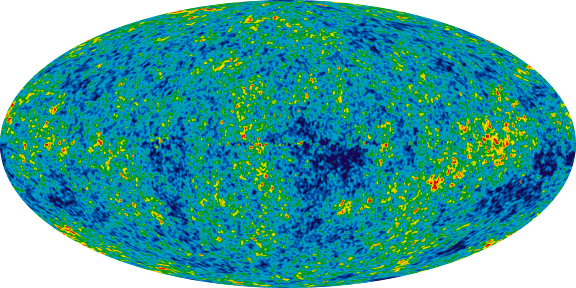

Cosmic Microwave Background
The Cosmic Microwave Background (CMBR): A Window into the Early Universe
The Cosmic Microwave Background, often abbreviated as CMBR (from Cosmic Microwave Background Radiation), is one of the most fascinating phenomena in cosmology. He offers us a unique insight into the earliest phase of the universe and provides important information about its formation, evolution and Structure. In this article we will take a closer look at the CMBR and what it means to us Discuss understanding of the universe.
background knowledge
The cosmic microwave background was first discovered in 1965 by Arno Penzias and Robert Wilson, who received the Nobel Prize in Physics in 1978. This remarkable phenomenon consists of weak, evenly distributed microwave beams coming from all directions in the sky. These rays have an almost constant temperature of around 2.7 Kelvin (-270.45 degrees Celsius) and are therefore only a few degrees above absolute zero. The CMBR is the remnant of the Big Bang that gave life to the universe about 13.8 billion years ago shouted. In the first moments after the Big Bang, the universe was extremely hot and dense. As it expanded, It cooled, and after about 380,000 years it had reached a temperature that allowed atoms to build. At this point, electrons were bound to protons and the universe became transparent for photons, including the microwave beams now known as CMBR.
Important information about the CMBR
- Temperature distribution: One of the most amazing discoveries regarding the CMBR is its remarkable uniformity. The temperature of the CMBR is almost the same almost everywhere in the sky, with tiny fluctuations of just a few thousandths of a degree. These tiny irregularities are from crucially important as they are the basis for the formation of today's galaxies and cosmic ones laid structures.
- Evidence for the Big Bang: The CMBR is considered one of the most convincing pieces of evidence for the Big Bang theory. The uniform background radiation is what we would expect if the universe consisted of a hot, would have emerged from a tight state.
- Structure in the CMBR: The tiny temperature fluctuations in the CMBR, called "anisotropies", are of crucial importance for our understanding of cosmic structure formation. You are the Seeds from which galaxies, stars and large cosmic structures emerged.
- Cosmological parameters: By studying the CMBR in detail, astronomers can gain important insights Determine cosmological parameters such as the Hubble constant, the matter-dark matter density and the The density of dark energy informs our understanding of the composition and evolution of the universe deepen.
- Planck Satellite: One of the most notable missions to study the CMBR was the Planck mission the European Space Agency (ESA). Between 2009 and 2013, the Planck satellite mapped the CMBR with unprecedented precision and provided extremely accurate data on its temperature anisotropies.
The CMBR is an amazing window into the early days of the universe and an important tool for Astronomers to reconstruct cosmic history. His study has changed our understanding of the The creation, development and composition of the universe has revolutionized and will continue to do so in the future contribute to unlocking the deepest secrets of the cosmos.